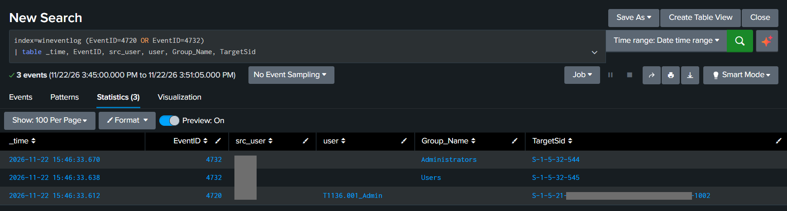

03 · Adding a member to Administrators
An account being added to the local Administrators group, matched on the group's language-independent SID (S-1-5-32-544).
Attack
Invoke-AtomicTest T1136.001 -TestNumbers 8
net localgroup administrators
Invoke-AtomicTest T1136.001 -TestNumbers 8 -CleanupDetection (SPL)
Final version
index=wineventlog EventID=4732 TargetSid=S-1-5-32-544
| table _time, EventID, src_user, user, Group_Name, TargetSidFalse positives and tuning
One account creation left three events in the Security log: 4720 (account created), 4732 for the Users group and 4732 for the Administrators group. When I first saw the Users addition, I thought the attacker added the account to Users first and then to Administrators to avoid attention. Then I learned Windows does this itself: every new local account is added to the Users group automatically. If I alerted on every 4732, every account creation would raise an alert. What really mattered to us was the addition to Administrators, because members of this group have far more privileges. The rule only looks at that. There were 2 events in the last 7 days, both tests.
Fixes
I searched for the group by its SID, not its name. The group name can be Turkish on some machines ("Yöneticiler") or in other languages on others, but the SID of the Administrators group (S-1-5-32-544) is the same on every machine. I first wrote TargetSid=*-544, then removed the leading wildcard and used the full SID.
I used the Security log instead of Sysmon because I wanted to see exactly what the attacker did. Sysmon only shows that net.exe ran. If the account is added with PowerShell, net.exe never runs. Windows writes 4732 no matter how the member was added.
Screenshots

T1136.001_Admin account is created and added to Administrators.

Test evidence
| Test | Time (VM clock) | Result |
|---|---|---|
| Manual positive control | 2026-11-20 15:02:09.677 | Caught |
| T1136.001-8 | 2026-11-22 15:46:33.670 | Caught |
Lesson learned
I need to learn better what Windows normally does. That way, in my next analysis, I can recognize that something was done by Windows and not by the attacker. The new account being added to the Users group is a good example: at first glance it looked like an attacker's step, but it was Windows' own behavior.
Full details (data sources, limitations, analyst next steps; in Turkish): detections/03-yonetici-grubuna-ekleme.md